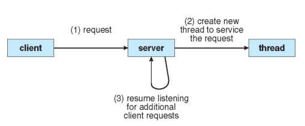
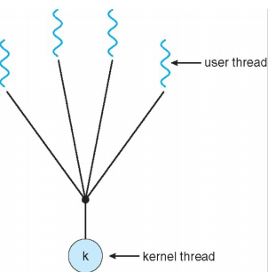
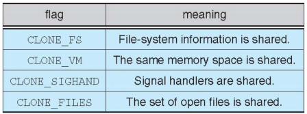
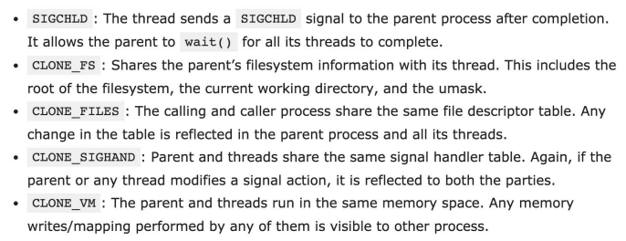

Thread
What is Thread
线程是独立的指令流，也可以被kernel调度运行
一个进程里的线程是共享该进程的global data、heap、code，但是不共享stack、register set、program counter (如果线程不单独拥有这些资源，就无法单独被调度执行)；对于共享资源的访问是同步的
线程是操作系统调度的最小单元：
- 每一个线程有自己独立的控制流
- 每一个线程都能处于任何一种调度状态
不管有多少个CPU core，线程的存在能提高CPU的性能和吞吐量；核心就是因为它能被单独调度，同时共享了进程资源。
Thread Benefits
-
Responsiveness
multithreading an interactive application allows a program to continue running even part of it is blocked or performing a lengthy operation
-
Resource sharing
sharing resources may result in efficient communication and high degree of cooperation. Threads share the resources and memory of the process by default.
-
Economy
thread is more lightweight than processes: create and context switch
-
Scalability
better utilization of multiprocessor architectures: running in parallel

并发Concurrency：不强调同一个时刻每一个线程都在运行
即使没有multi-core，也可以在一个CPU上以时间片轮转的方式执行
有multi-core，就真正有可能同时运行
在设计时，就尽可能切分成多个时间片
- is about structure
- 并行Parallelism：同一个时刻在不同CPU上真正run着不同的线程
只有一个CPU-core是不可能实现并行的
- is about execution
Implementing Threads
线程既可以在用户态被实现，也可以在内核态被实现
- user thread：线程实现在内核之上，不受内核支持
- kernel thread：线程由内核直接支持和管理
内核级线程 kernel-level Threads
- 内核知道线程的存在，当一个线程被block，另一个线程还可以被调度；否则一个线程被block之后，该进程就没办法被调度了
- 创建需要系统调用，cost比较大，需要TCB (thread control block)
用户态线程 user-level Threads
用户态线程和内核态线程的关系
-
many-to-one

-
one-to-one：一个用户态线程映射到一个内核态线程上
允许一个线程block时其它线程运行
多线程可以在多处理器上并发运行
创建一个用户线程需要创建一个相应的内核线程
操作系统限制了线程的数量，到达一定数量之后会被kill掉
-
many-to-many：多个用户态线程映射到多个内核态线程上
可以根据需要创建尽可能多的线程
中间有一个桥梁叫做LWP，OS调度的时候，是从LWP中选一段，再由LWP决定调度哪个线程
-
two-level model：类似于多对多，但它允许一个用户态线程绑定到一个内核态线程上
Threading Issues
Semantics of fork and exec system calls
- Fork duplicates the whole single-threaded process
- Exec typically replaces the entire process, multithreaded or not
Signal handling
- 消息处理函数都有一个回调函数，当某个事件发生的时候，会执行回调函数
- 如果不自己注册回调函数，操作系统会分配一个默认的回调函数
- 一旦消息被delivered了，就必须被处理
-
但是让哪一个线程来运行回调函数：
可以指定一个线程运行，也可以从当前正在运行的线程中选
-
信号处理可以是同步的，也可以是异步的
Thread cancellation of target thread
- asynchronous cancellation：立即终止目标线程
- deferred cancellation：目标线程周期性地检查它是否应该被终止
Thread-specific data
-
Thread-local storage (线程本地存储TLS)：允许每一个线程有它自己的数据拷贝
有一个修饰符_TLS，编译器能识别这个修饰符，会在另外一个地方，开一个array，操作系统能拿到当前线程的id (即tid)，之后在线程中用到这个数据时，
array[tid] -
local变量只能在当前函数调用时时生效，但tls变量是全局性的，类似于static data
-
TLS is unique to each thread
-
虽然加上tls之后，每个线程都操纵自己的拷贝，但他们在物理内存上不是隔离的
可以把其他线程的栈的虚拟地址拿过来，甚至线程1可以改变线程2的行为，线程和线程之间是没办法隔离的
Scheduler activations
-
Lightweight Process (LWP)在多对多、两级模型上存在
内核调度的是内核线程，thread library管理用户线程，用户线程放在LWP上
在一对一的情况下，LWP指的是内核线程，线程指的是用户态线程
Linux Threads
Linux提供了fork和clone的系统调用
通过clone可以创建出来既不是线程又不是进程的东西，又能让它共享memory space，又不共享file descriptor
clone()提供了很多flag，规定了新创建的执行实体 (称为task)，和原先的task共享哪些memory


FS/VM/SIGHAND/FILES -> equivalent to thread creation
no flag set, no sharing -> equivalent to fork
part of flags set -> uses term task
e.g.:
如果CLONE_FILES打开，在新的task中，就不必再打开已打开的文件，可以直接使用fd
而且子任务可以关掉父任务打开的文件
Pthreads
进程fork后，fork所在的那一条线程会会继续执行。如果fork()之后，子进程继续向下执行，有创建线程的话，子进程会创建线程；如果fork()之后，子进程继续向下执行，没有创建线程的话，子进程就不会创建线程；fork在线程函数里的话，只会把线程复制一份。
不管怎么样，fork都复制了整个进程，但是只启用了它所在的那个执行路径，如果它所在的那个执行路径fork后有创建线程的话，子进程会创建线程；如果它所在的那个执行路径fork后没有创建线程而在fork之前有创建线程的话，那么fork不会启用fork之前创建的线程，只会启用当前所在线程，继续执行下去。
https://blog.csdn.net/yi_chengyu/article/details/120424744
Dissecting Linux Threads
创建新的task的时候，栈空间是从已经存在的task的堆空间中划分出来的
栈在哪里无所谓，只要给它分配一段空间，告诉操作系统这是它的栈就可以了
栈只是一块memory，不存在硬件栈（即使有的CPU真的有硬件栈，也不是给用户用的）
COW机制
只有在写入buffer的时候才进行拷贝操作，在clone的时候不拷贝memory
__thread
__thread int x;
加上这个修饰词之后，每个线程都有各自的x，它们操作x的时候互不干扰
不加这个修饰词，x就是一个全局变量，每个线程操作x的时候会互相干扰